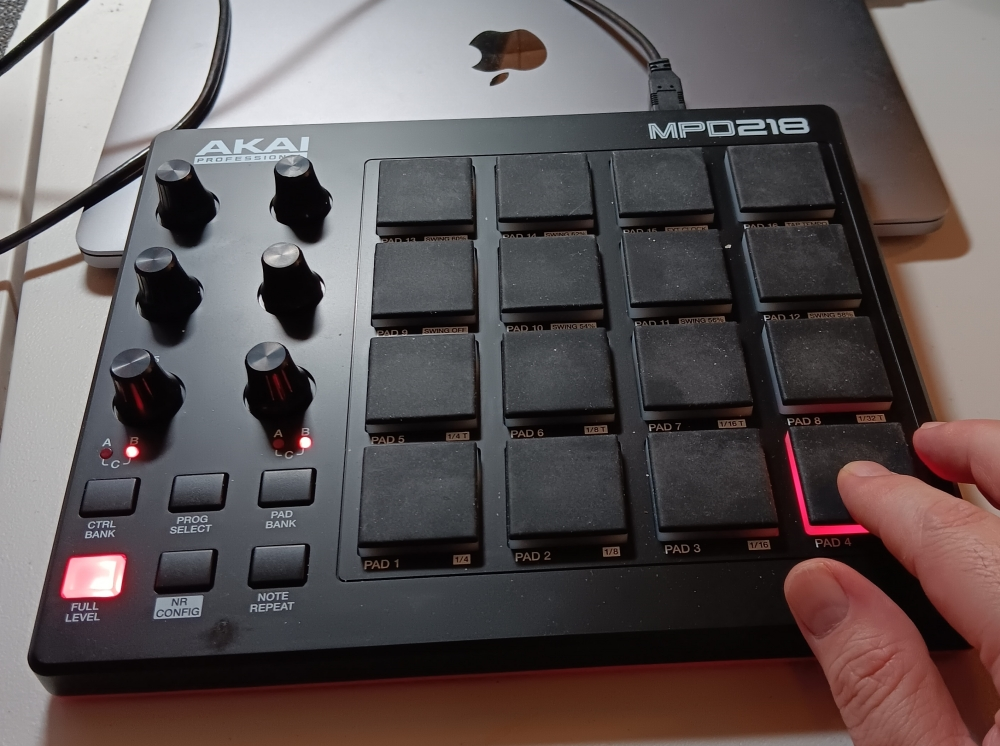

Control Linux with MIDI
I decided to see if I could intercept signals from my MIDI controller and control my Linux machine. YES! (tl;dr: capture-midi)
Being a musician, I happen to have a couple MIDI controllers. Like this one, for instance:

An Akai MPD218 4x4x3 pad and 6x3 knob controller.
With that device, a Linux laptop, perl, aseqdump, and xdotool, I was able to glue together a program that captures MIDI and triggers either modifier keystrokes (like CTRL-L) or literal text (like ':tabnew').
Really, I only want to control my editor: vim. But you can trigger any keystroke thing, for any window that you are focused on! (I actually do have a bank of pads and knobs for Firefox things. But I just made that as a proof of concept, and never actually use it.)
As for the full code that glues this all together, please see the above "tl;dr" link. But we'll take a look at a few crucial bits here.
First, the capture program relies on the above things being present (like aseqdump). Second it uses a YAML configuration file declaring every single MIDI event to detect, and the keystrokes that they trigger. My vim config is in the same GitHub directory as the capture program itself.
The meat of the program is a single while loop that listens for MIDI events. This loop parses each line into meaningful parts that are used to trigger keystrokes. Next up, is the triggering itself with an inner foreach loop over every trigger event in the config. "Whew!" I hear you say. But it appears to be fast enough...
Anyway, if we find a match, based on the name of the event and the event data, we trigger either a keystroke or literal text to be "typed", which is entered into the window with the current computer focus.
And that's it really! It works perfectly.
So Linux musician people: double the functionality of your MIDI controllers! :D